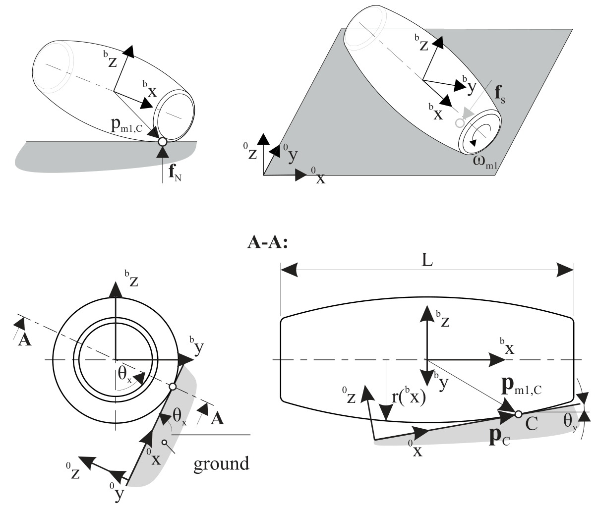

ObjectContactConvexRoll
A contact connector representing a convex roll (marker 1) on a flat surface (marker 0, ground body, not moving) in global \(x\)-\(y\) plane. The connector is similar to ObjectConnectorRollingDiscPenalty, but includes a (strictly) convex shape of the roll defined by a polynomial. It is based on a penalty formulation and adds friction and slipping. The formulation is still under development and needs further testing. Note that the rolling body must have the reference point at the center of the disc.
Author: Manzl Peter
Interface
Nodes it takes: NodeGenericData
Markers it acts on: those providing
PositionandOrientation: MarkerBodyRigid, MarkerNodeRigid, MarkerSuperElementRigid, MarkerKinematicTreeRigid
Parameters
The parameters of the item; in a dictionary, its type is ‘ContactConvexRoll’:
name |
type |
size |
default |
description |
|---|---|---|---|---|
name |
String |
‘’ |
constraints’s unique name |
|
markerNumbers |
ArrayMarkerIndex |
2 |
[ invalid (-1), invalid (-1) ] |
(symbol: \([m0,m1]\tp\)) list of markers used in connector; \(m0\) represents the ground, which can undergo translations but not rotations, and \(m1\) represents the rolling body, which has its reference point (=local position [0,0,0]) at the roll’s center point |
nodeNumber |
NodeIndex |
invalid (-1) |
(symbol: \(n_d\)) node number of a NodeGenericData (size=3) for 3 dataCoordinates, needed for discontinuous iteration (friction and contact) |
|
contactStiffness |
Real |
0. |
(symbol: \(k_c\)) normal contact stiffness [SI:N/m] |
|
contactDamping |
Real |
0. |
(symbol: \(d_c\)) normal contact damping [SI:N/(m s)] |
|
dynamicFriction |
UReal |
0. |
(symbol: \(\mu_d\)) dynamic friction coefficient for friction model, see StribeckFunction in exudyn.physics, Module: physics |
|
staticFrictionOffset |
UReal |
0. |
(symbol: \(\mu_{s_off}\)) static friction offset for friction model (static friction = dynamic friction + static offset), see StribeckFunction in exudyn.physics, Module: physics |
|
viscousFriction |
UReal |
0. |
(symbol: \(\mu_v\)) viscous friction coefficient (velocity dependent part) for friction model, see StribeckFunction in exudyn.physics, Module: physics |
|
exponentialDecayStatic |
PReal |
0.001 |
(symbol: \(v_{exp}\)) exponential decay of static friction offset (must not be zero!), see StribeckFunction in exudyn.physics (named expVel there!), Module: physics |
|
frictionProportionalZone |
UReal |
0.001 |
(symbol: \(v_{reg}\)) limit velocity [m/s] up to which the friction is proportional to velocity (for regularization / avoid numerical oscillations), see StribeckFunction in exudyn.physics (named regVel there!), Module: physics |
|
rollLength |
UReal |
0. |
(symbol: \(L\)) roll length [m], symmetric w.r.t. centerpoint |
|
coefficientsHull |
NumpyVector |
[] |
(symbol: \(\kv \in \Rcal^{n_p}\)) a vector of polynomial coefficients, which provides the polynomial of the CONVEX hull of the roll; \(\mathrm{hull}(x) = k_0 x^{n_p-1} + k x^{n_p-2} + \ldots + k_{n_p-2} x + k_{n_p-1}\) |
|
coefficientsHullDerivative |
NumpyVector |
[] |
(symbol: \(\kv^\prime \in \Rcal^{n_p}\)) polynomial coefficients of the polynomial \(\mathrm{hull}^\prime(x)\) |
|
coefficientsHullDDerivative |
NumpyVector |
[] |
second derivative of the hull polynomial. |
|
rBoundingSphere |
UReal |
0 |
radius of the bounding sphere for the contact pre-check; computed from |
|
pContact |
Vector3D |
3 |
[0,0,0] |
the current potential contact point; computed in every contact evaluation and therefore read-only. Contact occurs if |
activeConnector |
Bool |
True |
flag, which determines, if the connector is active; used to deactivate (temporarily) a connector or constraint |
|
visualization |
VObjectContactConvexRoll |
parameters for visualization of item |
Visualization parameters
The parameters of VObjectContactConvexRoll, given as visualization:
name |
type |
size |
default |
description |
|---|---|---|---|---|
show |
Bool |
True |
set true, if item is shown in visualization and false if it is not shown |
|
color |
Float4 |
4 |
[-1.,-1.,-1.,-1.] |
RGBA connector color; if R==-1, use default color |
Drawing
Drawn as all connectors; the contact point, a small sphere.
Output variables
Available as OutputVariableType in sensors, Get...Output() and other functions:
output variable |
symbol |
description |
|---|---|---|
Position |
\(\LU{0}{\pv}_{C}\) |
current global position of contact point between roller and ground |
Velocity |
\(\LU{0}{\vv}_{C}\) |
current velocity of the trail (contact) point in global coordinates; this is the velocity with which the contact moves over the ground plane |
Force |
\(\LU{0}{\fv}\) |
Roll-ground force in ground coordinates |
Torque |
\(\LU{0}{\mv}\) |
Roll-ground torque in ground coordinates |
Detailed description
Definition of quantities
intermediate variables |
symbol |
description |
|---|---|---|
marker m0 position |
\(\LU{0}{\pv}_{m0}\) |
current global position which is provided by marker m0, any ground reference point; currently unused |
marker m0 orientation |
\(\LU{0,m0}{\Rot}\) |
current rotation matrix provided by marker m0; currently unused |
marker m1 position |
\(\LU{0}{\pv}_{m1}\) |
center of roll |
Contact position |
\(\LU{0}{\pv}_{C}\) |
Position of the Contact point C in the global frame 0 |
Position marker m1 to contact |
\(\LU{0}{\pv}_{\mathrm{m1, C}}\) |
Position of the contact point C relative to the marker m1 in global frame |
marker m1 orientation |
\(\LU{0,m1}{\Rot}\) |
current rotation matrix provided by marker m1 |
data coordinates |
\(\xv=[x_0,\,x_1,\,x_2]\tp\) |
data coordinates for \([x_0,\,x_1]\): hold the sliding velocity in lateral and longitudinal direction of last discontinuous iteration; \(x_2\): represents gap of last discontinuous iteration (in contact normal direction) |
marker m1 velocity |
\(\LU{0}{\vv}_{m1}\) |
current global velocity which is provided by marker m1 |
marker m1 angular velocity |
\(\LU{0}{\tomega}_{m1}\) |
current angular velocity vector provided by marker m1 |
ground normal vector |
\(\LU{0}{\nv}\) |
normalized normal vector to the (moving, but not rotating) ground, by default [0,0,1] |
Geometric relations
The geometrical setup is shown in Fig. 39. To calculate the contact point of the convex body of revolution the contact (ground) plane is rotated into the local frame of the body. In this local frame in which the generatrix of the body of revolution is described by the polynomial function
with the coefficients of the hull \(a_i\). As a pre-Check for the contact two spheres are put into both ends of the object with the maximum radius and only if one of these is in contact. The contact point \(^{\mathrm{b}}\pv_{\mathrm{m1,C}} \) is calculated relative to the bodies marker m1 in the bodies local frame and transformed accordingly.
The contact point C can for be calculated convex bodies by matching the derivative of the polynomial \(r(^bx)\) with the gradient of the contact plane, shown in Fig. 39, explained in detail in ManzlGerstmayr2021.
At the contact point a normal force \(\fv_{\mathrm{N}} = [ 0 \; 0 \; \mathrm{f}_{\mathrm{N}} ]\tp\) with
acts against the penetration of the ground. The penetration depth \(z_{\mathrm{pen}}\) is the z-component of the position vector of the contact point relative to the ground frame \({^0\pv_{\mathrm{C}}}\).


Fig. 39 Sketch of the roller Dimensions. The rollers radius \(r({^bx})\) is described by the polynomial coefficientsHull.
The revolution results in a velocity of
in the contact point, while the tangential component of the velocity of the body itself with the normal Vector to the contact plane \(\nv\) follows to
Therefore the slip velocity of the body can be calculated with
and points in the direction
The slip force is then calculated
and uses for the friction coefficient \(\mu\) the regularized friction approach from the StribeckFunction, see Module: physics. The torque
acts onto the body, resulting from the slip force acting not in the bodies center.
Relevant Examples (Ex) and TestModels (TM) with weblink to github: ConvexContactTest.py (TM)